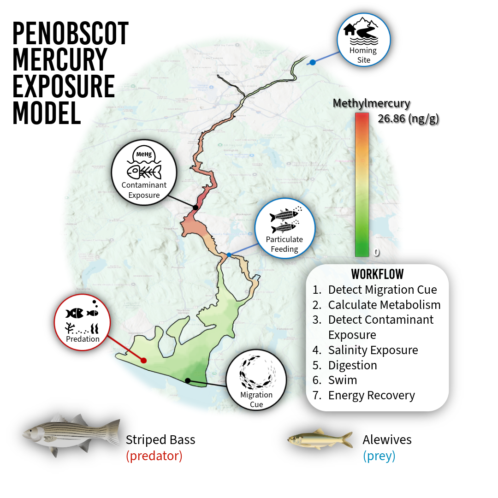

Chapter 18 Applied Model Building Tutorial: Penobscot Mercury Exposure Model (P-MEM)
⬇ Download this chapter (.docx)
This chapter demonstrates how every submodel introduced in this library — schooling, landward and seaward migration, selective tidal stream transport, osmoregulation, metabolism, digestion, foraging, migration cue detection, and contaminant exposure — can be assembled into a single site-specific agent-based model. The Penobscot Mercury Exposure Model (P-MEM) is the applied implementation provided in Quintana (2026), and hosted GitHub Version Repository. Unlike the tutorial examples in Chapters 15 and 16, P-MEM is spatially and temporally explicit: agents navigate a 2-D GIS representation of the Penobscot River Estuary, forced by hourly hydrodynamic outputs from a validated Delft3D FM model, with a nested agent-based time step representing one 5-minute interval on a real calendar beginning in April 2023.
Results from the full model — spatial exposure maps, time-series outputs, and multi-scenario comparisons — are available in the interactive Mercury Risk Explorer.
18.1 Module Integration
P-MEM couples hydrology, behavior, and physiology in a single model time step. Contaminant exposure in estuaries is spatially and temporally heterogeneous, structured by tidal forcing and seasonal discharge that simultaneously organize anadromous fish migration timing and the spatial distribution of methylmercury (MeHg) in the water column. Realized exposure risk — defined as the cumulative contaminant interaction accumulated by an individual over time — is not determined by spatial coincidence between contamination and habitat suitability alone, but by what the fish is doing, where it is, and what physiological state it is in at every time step.
The model simulates two focal species: alewives (Alosa pseudoharengus) as obligate spawning migrants, and striped bass (Morone saxatilis) as facultative seasonal predators. These species interact through predator–prey encounters that modify alewife movement (fleeing) and change which exposure pathways dominate. Predation pressure is varied across scenarios by scaling striped bass visual detection distance, which modifies encounter rates without changing population size.
Temporal structure. Each time step represents one 5-minute interval. The calendar advances minute → hour → day using the calendar procedure. Hydrodynamic patch variables (velocity, depth, salinity, temperature, SPM) are updated every 12 time steps (1 hour) from the empirical time-series loaded at setup, derrived from the outputs of a hydrodynamic model. Migration cue detection (update-migration-cue) runs once per day. All behavioral, physiological, and exposure submodels run every tick for active agents.
Spatial scale. The model domain is the Penobscot River Estuary, Maine, discretized as a 0–200 × 0–350 patch grid (3 m per patch, set with resize-world 0 200 0 350). Patches are classified as upper estuary, middle estuary, lower estuary, and sea using GIS shapefiles. The dam (Milford Dam) is located at y = 342 and serves as both a behavioral barrier and a validation cross-section. home-patch (upper estuary, patch 199 346) and migration-patch (sea entry, patch 100 35) are fixed.
Coupling logic.

The core tick sequence within penobscot-go is:
- Update patch data from hydrodynamic time series (
update-patch-data) - Reset
cost-to-home,cost-to-sea,cost-to-preyrouting fields - Per-agent migration cue accumulation (
calc-migration-probability) - Per-agent behavioral sequence —
calculate-metabolism→swim→mercury-contamination→methylmercury-contamination→osmoregulate→digest→forage - Residence phase and departure logic (wait-days counter)
- Dam crossing and estuary entry/exit counters (
count-alewives) - Export results (
export-results)
The swim procedure is the central integrator: it sets previous-patch / previous-x / previous-y, calls calculate-cost-to-home → calculate-difficulty-landward → calculate-swimming-speed-landward → selective-tidal-stream-transport-landward (which calls migrate-landward, which calls school), and then deducts calculate-swim-energy. All of this happens before contamination tracking, osmoregulation, or digestion, because movement determines which patch the agent is on when those exposure functions read patch-level contaminant values.
18.2 Function Dependencies
The table below shows the full dependency chain for an alewife in the landward migration phase. Functions are listed in the order they must be called each tick.
| Function | Required Inputs | Output Variables | Dependent On |
|---|---|---|---|
calendar |
ticks, minute, hour, day |
minute, hour, day, month, night? |
tick counter |
update-patch-data |
current-hour, velocity-series, salinity-series, temp-series, spm-series |
velocity, salinity, temperature, SPM (per patch) |
calendar (hourly) |
update-migration-cue |
day, cue-days |
cue-active?, migration-trigger? |
calendar (daily) |
calc-migration-probability |
migration-trigger?, migration-probability |
migration-probability, start-migration? |
update-migration-cue |
calculate-metabolism |
weight, temperature, age-num, met-base, optimal-temperature |
metabolism-rate, swim-efficiency, osmoregulation-efficiency |
patch temperature |
calculate-cost-to-home |
home-patch, patch-terrain, difficulty-factor |
cost-to-home (all water patches) |
swim-efficiency |
calculate-difficulty-landward |
velocity, weight, max-seaward-velocity, max-landward-velocity |
difficulty-factor |
patch velocity |
calculate-swimming-speed-landward |
energy, difficulty-factor, max-speed, min-speed, velocity, prev-speed, swim-efficiency |
speed, prev-speed |
calculate-difficulty-landward |
selective-tidal-stream-transport-landward |
velocity, speed, min-speed, swim-efficiency, selective-tidal-transport?, STST-start-tick |
xcor, ycor, selective-tidal-transport?, tidal-transport-in-patch |
calculate-swimming-speed-landward |
migrate-landward (inside STST Case 3) |
speed, home-patch, cost-to-home, schooling coefficients |
xcor, ycor, trail, heading, patch visit counters |
calculate-cost-to-home, schooling state |
calculate-swim-energy |
difficulty-factor, swim-efficiency, swim-base |
E-swim, energy |
after movement |
mercury-contamination |
mercury, SPM, metabolism-rate, ionregulatory-stress, min-Hg, max-Hg |
hg-uptake-risk, hg-exposure-total, hg-exposure-duration |
swim, patch position |
methylmercury-contamination |
methylmercury, SPM, metabolism-rate, ionregulatory-stress, min-MeHg, max-MeHg |
mehg-uptake-risk, mehg-exposure-total, mehg-exposure-duration |
swim, patch position |
osmoregulate |
salinity, acclimated-salinity, chloride-cell-density, E-base, E-creation |
ionregulatory-stress, chloride-cell-density, E-osmo, energy |
patch salinity, metabolism-rate |
digest |
stomach-contents, digestion-rate, digestion-efficiency |
stomach-contents, energy, weight, mehg-foraging-total |
forage (prior tick) |
forage |
energy, landward-migration?, weight, original-weight, salinity, SPM |
foraging?, lipid-loss?, filter-feed?, energy, weight, stomach-contents |
swim, osmoregulate |
count-alewives |
previous-patch, patch-here, patchtype |
daily totals (dam crossings, estuary entry/exit) | end of tick |
export-results |
all agent and patch state variables | CSV output files | end of tick |
Key dependency on swim: All contamination, osmoregulation, and digestion functions read patch-level variables (mercury, methylmercury, salinity, temperature, SPM) from patch-here. This means swim — which moves the agent — must complete before any of these functions run. If the order is reversed, agents are exposed to the contaminant levels of the previous tick’s patch, not their current location.
STST and schooling coupling: selective-tidal-stream-transport-landward gates the call to migrate-landward. migrate-landward contains the full schooling sequence (find-schoolmates → find-nearest-neighbor → separate / cohere + align → adjust-speed) before executing path-following movement. Agents in STST drift passively and do not school; this is correct behavior and means school cohesion metrics are only meaningful for active-swimming ticks.
Migration cue → start-migration?: The calc-migration-probability function increments migration-probability each day the cue is active, and an agent transitions to start-migration? = true stochastically when random-float 1 <= migration-probability. This produces a spread of entry dates that can used for model evaluation.
18.3 Implementation in NetLogo
The P-MEM implementation builds directly on the GoFish behavioral library. The complete source code, input data, and documentation are archived at https://doi.org/10.5281/ZENODO.19483469 and the repository is documented at https://vmahan1998.github.io/GoFish/. The code shown here is the operational model; all nls files are used verbatim from the GoFish library.
18.3.1 File includes
__includes[
"nls/calendar.nls"
"nls/VariableNames.nls"
"nls/Create-map.nls"
"nls/prototypesetup.nls"
"nls/penobscotsetup.nls"
;"nls/Create-velocity.nls"
;"nls/Update-velocity.nls"
;"nls/Create-depth.nls"
;"nls/Update-depth.nls"
;"nls/Create-salinity.nls"
;"nls/Update-salinity.nls"
;"nls/Create-SSC.nls"
;"nls/Update-SSC.nls"
;"nls/Create-Temperature.nls"
;"nls/Update-Temperature.nls"
"nls/Update-hydro-data.nls"
"nls/Create-Hg.nls"
"nls/Create-MeHg.nls"
"nls/Fill-Missing-Data.nls"
"nls/Identify-Missing-Patches.nls"
"nls/Velocity-Color.nls"
"nls/Schooling.nls"
"nls/Find-Schoolmates.nls" ; should I have multiple schools or 1?
"nls/Find-nearest-neighbor.nls"
"nls/Align.nls"
"nls/Cohere.nls"
"nls/Separate.nls"
"nls/Setup-Alewives.nls"
"nls/Setup-StripedBass.nls"
"nls/Adjust-Alewife-speed.nls"
"nls/Adjust-StripedBass-speed.nls"
"nls/Reporters.nls"
"nls/Landward-Migration.nls" ; no foraging for alewives during migration here, will lose lipids
"nls/Seaward-Migration.nls"
"nls/Selective-Tidal-Stream-Transport.nls"
"nls/Swim.nls"
"nls/flee-stripedbass.nls"
"nls/Eat.nls"
"nls/Chase-nearest-alewife.nls"
"nls/Scare-down.nls"
"nls/Scare-up.nls"
"nls/Scare-left.nls"
"nls/Scare-right.nls"
"nls/Scare-prey.nls"
"nls/Wander.nls"
"nls/Count-prey-eaten.nls"
;"nls/Prey-on-Alewives.nls"
"nls/Mercury-Contamination.nls"
"nls/Methylmercury-Contamination.nls"
"nls/Osmoregulation.nls" ; update to salinity exposure
;"nls/Staging.nls" ;Remove post workshop
;"nls/Foraging.nls" ;Remove post workshop
"nls/Foraging_postworkshop_update.nls" ; define from turbidity or sediment, also need opportunistic foragig
"nls/Calculate-metabolism.nls" ; metabolic caluclation
"nls/Calculate-photoperiod.nls" ; photoperiod
"nls/Migration-cue.nls" ;; migration
"nls/dam_counts_validation.nls"
"nls/Calculate-visual-distance.nls"
"nls/digestion.nls"
"nls/Export_results.nls"
"nls/Sample-size.nls"
]18.3.2 Setup
to setup
clear-all ;; reset variables
;; Initialize time variables
;; set simulation to start at chosen month
set monthnum start-month
let months ["January" "February" "March" "April" "May" "June" "July" "August" "September" "October" "November" "December"]
let monthstarts [1 32 60 91 121 152 182 213 244 274 305 335]
set month item (monthnum - 1) months
set current-month month
set day item (monthnum - 1) monthstarts
set hour 0
set minute 0
;; Initialize the model environment
if model-type = "penobscot" [setup-GIS]
if model-type = "prototype" [prototype-setup]
;; Set environment parameters based on model type
if model-type = "penobscot" [penobscot-parameters]
if model-type = "prototype" [prototype-parameters]
;update-SPM-mean
;; Agent setup
set-default-shape turtles "fish"
;; Create fish agents randomly in the prototype model
if model-type = "prototype" [setup-migration]
;; Initialize species-specific fish
if model-type = "penobscot" [setup-penobscot-migration]
reset-ticks ;; Reset the tick counter
end18.3.3 The penobscot-setup procedure — full site-specific
to setup-penobscot-migration
;set stamp_1 "2_09_2026" ;; test pred vision-distance
set stamp_1 (word "low" behaviorspace-run-number)
set density-multiplier 0.5 ;; 0, 0.5, 1, 2
set export-interval 12 ;; example: export every 12 ticks
setup-alewives
setup-stripedbass
set Hg-threshold 150 ; ng/kg (National Oceanic and Atmospheric Administration (NOAA), 1990) Adjust based on NOAA data
set MeHg-threshold 15 ; ng/kg Adjust based on NOAA data
set month-list ["January" "February" "March" "April" "May" "June" "July" "August" "September" "October" "November" "December"]
set current-hour 0
;set day 0
;set current-hour 240
let header first velocity-data
set total-hours (length header - 4) ;; columns after px, py
;draw-mehg-legend
load-cue-csv
set cue-active? false
set migration-trigger? false
set end-migration-trigger? false
set alewives-exiting-estuary-daily-total 0
set alewives-entering-estuary-daily-total 0
set alewives-on-line-daily-total-landward 0
set alewives-on-line-daily-total-seaward 0
set stripedbass-exiting-estuary-daily-total 0
set stripedbass-entering-estuary-daily-total 0
set stripedbass-on-line-daily-total-landward 0
set stripedbass-on-line-daily-total-seaward 0
;; Patch Metrics
ask patches with [patch-terrain != "water"] [
set cost-to-home 1e9
set cost-to-sea 1e9
set cost-to-prey 1e9
]
ask patches [
set ticks-spent-alewife 0
set visits-by-alewife 0
set ticks-spent-stripedbass 0
set visits-by-stripedbass 0
set prey-eaten-in-patch 0
;; Risk from Foraging
set Hg-foraging-risk-alewife 0;; mercury risk from patch
set MeHg-foraging-risk-alewife 0;; methylmercury risk from patch
set Hg-foraging-risk-stripedbass 0
set MeHg-foraging-risk-stripedbass 0
set Hg-foraging-risk-total-alewife 0;; mercury risk from patch
set MeHg-foraging-risk-total-alewife 0;; methylmercury risk from patch
set Hg-foraging-risk-total-stripedbass 0
set MeHg-foraging-risk-total-stripedbass 0
;; Risk from Exposure
set Hg-exp-risk-alewife 0;; mercury risk from patch
set MeHg-exp-risk-alewife 0;; methylmercury risk from patch
set Hg-exp-risk-stripedbass 0
set MeHg-exp-risk-stripedbass 0
set Hg-exp-risk-total-alewife 0;; mercury risk from patch
set MeHg-exp-risk-total-alewife 0;; methylmercury risk from patch
set Hg-exp-risk-total-stripedbass 0
set MeHg-exp-risk-total-stripedbass 0
]
;; setup functions
find-migration-days
update-migration-cue
initialize-results-reporter
;set local-temp mean [temperature] of patches with [patchtype = "sea"]
;show (word "Local Temperature: " local-temp)
show (word "BehaviorSpace gave stamp_1 = " stamp_1)
;show (word "BehaviorSpace gave run_name = " run_name)
reset-ticks
end18.3.4 The go procedure
to go
calendar ;; Call the calendar procedure to update hour, day, and month
if model-type = "penobscot" [penobscot-go]
if model-type = "prototype" [prototype-go]
tick ;; Increment the tick counter
end18.3.5 The penobscot-go procedure — full time step sequence
to penobscot-go
;; update the simulation data
if ticks mod 12 = 0 [
update-patch-data
]
ask patches with [ patch-terrain = "water" ][
set cost-to-home 1e6
set cost-to-sea 1e6
set cost-to-prey 1e6
;set spm random-float 0.0004 ;; random value between 0 and 0.0004
;color-tidal-trapping-patches
;color-foraging-patches
]
;; Daily counters
;; If environmental temp meets or exceeds the fish's migration threshold, start migrating
if ticks mod 288 = 0 [
; show word "LANDWARD: " alewives-on-line-daily-total-landward
; show word "SEAWARD: " alewives-on-line-daily-total-seaward
; show word "ENTRY: " alewives-entering-estuary-daily-total
; show word "EXIT: " alewives-exiting-estuary-daily-total
set alewives-on-line-daily-total-landward 0
set alewives-on-line-daily-total-seaward 0
set alewives-entering-estuary-daily-total 0
set alewives-exiting-estuary-daily-total 0
set stripedbass-on-line-daily-total-landward 0
set stripedbass-on-line-daily-total-seaward 0
set stripedbass-entering-estuary-daily-total 0
set stripedbass-exiting-estuary-daily-total 0
]
ask alewives [
if ticks mod 288 = 0 [
calc-migration-probability
set crossed-dam-landward-today? false
set crossed-dam-seaward-today? false
set entered-estuary-today? false
set exited-estuary-today? false
]
if (not start-migration?) [
let p migration-probability
if random-float 1 <= p [
set start-migration? true
set landward-migration? true
set seaward-migration? false
set migration-day day
]
]
;; --- Migration and behavior sequence ---
if start-migration? [
;; Perform behavioral sequence only if not at home
if not at-destination? [
calculate-metabolism
mercury-contamination
methylmercury-contamination
osmoregulate
digest
swim
;; Energy recovery strategy
if not ([location] of patch-here = "lower estuary" and seaward-migration? = true) [
if energy <= 25 [ set foraging? true ]
if energy >= 75 [
set foraging? false
set lipid-loss? false
set filter-feed? false ]
forage
]
;; Energy recovery strategy before leaving estuary
if ([location] of patch-here = "lower estuary" and seaward-migration? = true) [
if energy < 75 [ set foraging? true ]
if energy >= 75 [
set foraging? false
set lipid-loss? false
set filter-feed? false ]
forage
]
]
;; --- Residence phase (fish is home) ---
if (patch-here = home-patch) and (landward-migration? = true) [
if wait-days < days-at-large [
set at-destination? true
set completed-action? true
set wait-ticks wait-ticks + 1
set wait-days (wait-ticks / 288) ; 5 minute time steps
]
;; --- Departure phase ---
if wait-days >= days-at-large [
set seaward-migration? true
set landward-migration? false
set at-destination? false
]
]
if (patch-here = migration-patch) and (seaward-migration? = true) [
set start-migration? false
]
]
count-alewives
;; After all agent actions (before 'end')
if (patch-here = migration-patch) and (seaward-migration?) [
set seaward-migration? false
;set end-migration-day day
]
]
ask stripedbass [ ;; in system May-October with max in June-july
;; Migration Cue
if ticks mod 288 = 0 [
calc-migration-probability
set daytime-prey-eaten 0
set crossed-dam-landward-today? false
set crossed-dam-seaward-today? false
set entered-estuary-today? false
set exited-estuary-today? false
]
if (not start-migration?) [
let p migration-probability
if random-float 1 <= p [
set start-migration? true
set seaward-migration? false
set landward-migration? true
set migration-day day
]
]
if start-migration? [
let travel-distance (speed / 3)
calculate-metabolism ;; GoFish Metabolism
school
digest ;; GoFish Digestion
osmoregulate ;; GoFish Salinity Exposure
mercury-contamination ;; GoFish Contaminant Exposure
methylmercury-contamination ;; GoFish Contaminant Exposure
set previous-patch patch-here
if patchtype = "sea" and not end-migration-trigger? [
set seaward-migration? false
set landward-migration? true
;set selective-tidal-transport? false
calculate-cost-to-home home-patch
calculate-difficulty-landward
calculate-swimming-speed-landward
selective-tidal-stream-transport-landward
]
if patchtype != "sea" [
set seaward-migration? false
set landward-migration? false
set prey-in-vision (alewives with [patchtype != "sea" and patch-here != patch 199 346]) in-radius vision-distance ;; defines alewives in reachable proximity
;; GoFish Predation Procedure
if stomach-contents <= 0 [ ;; if no prey in stomach to gain energy, use lipid loss to use fat stores
set foraging? true
set lipid-loss? true
forage-options ;; GoFish Lipid Catabolism
]
ifelse any? prey-in-vision ;; in stomach capacity < full capacity
[ set hunting? true
chase-nearest-alewife ] ;; point towards nearest prey in "nls/Chase-nearest-alewife.nls"
[ set hunting? false
wander ] ;; wander if no prey in sight in "nls/Wander.nls"
adjust-stripedbass-speed ;; predator will speed up when making an attack
scare-prey ;; prey fleeing starts at predator because of control flow (scare-right, scare-left)
eat ;; eat prey if within neighbors in "nls/Eat.nls"
]
;;;;;;;;;;;;;;;;;;;;;;;;;;;;;;;;;;;;;;;;;;;;;;;;;;;;;;
;; Migrate Seaward when migration ends
if monthnum >= 7 and cue-active? [
set end-migration-trigger? true
]
if end-migration-trigger? [
if ticks mod 288 = 0 [
calc-outmigration-probability
let p outmigration-probability
if random-float 1 <= p [
set end-migration? true
set end-migration-day day
]
]
set seaward-migration? true
set landward-migration? false
;set selective-tidal-transport? false
calculate-cost-to-sea migration-patch
calculate-difficulty-seaward
calculate-swimming-speed-seaward
selective-tidal-stream-transport-seaward
]
;;;;;;;;;;;;;;;;;;;;;;;;;;;;;;;;;;;;;;;;;;;;;;;;;;;;;;;;;;;;;;;;;;;;;;;;
]
count-stripedbass
]
;highlight-patches-with-prey-eaten ;; highlights patches where prey has been eaten
; ;; trail
; ask turtles [
; foreach trail [
; p -> ask p [ set pcolor yellow ]
; ]
;]
export-results
let a-count-sea count alewives with [
[patchtype] of patch-here = "sea" and
completed-action?
]
let a-count count alewives
if a-count = 0 or a-count-sea = a-count [
export-end-results
stop
]
end18.3.6 What to observe
The P-MEM produces outputs across three categories:
- Migration timing and passage counts: Compare
alewives-on-line-daily-total-landwardagainst observed fish passage data. The stochastic migration probability ramp should produce a realistic spread of entry dates peaked in late April–May. - Behavioral state dynamics: Plot the proportions of agents in STST (
selective-tidal-transport?), foraging (foraging?), landward migration (landward-migration?), and at destination (at-destination?) over time. These proportions shift across the tidal cycle and across the migration season, illustrating how behavior reorganizes contaminant exposure opportunity. - Exposure pathway dominance: Compare
mean [hg-uptake-risk] of alewives(branchial, gill-contact exposure) againstmean [hg-foraging-total] of alewives(particulate ingestion) across predation scenarios. P-MEM shows that predation pressure shifts which pathway dominates individual cumulative burden. - Spatial exposure patterns: The Mercury Risk Explorer shows cumulative
hg-exp-risk-total-alewifeandmehg-exp-risk-total-alewifeaggregated across patches, revealing which reaches of the estuary accumulate the most contaminant interaction across scenarios.
18.3.7 Export Results from Netlogo
to export-results
report-fish-results
report-daily-totals
maybe-export-patches-at-month-change
end
to export-end-results
export-patch-results
end
to-report alewife-month-file
report (word "results_alewives_" stamp_1 "_" month ".csv")
end
to-report stripedbass-month-file
report (word "results_stripedbass_" stamp_1 "_" month ".csv")
end
to ensure-alewife-month-header [fname]
if not member? fname initialized-alewife-month-files [
file-open fname
file-print (word
"ticks,day,month,hour,minute,"
"id,breed,"
"migration_day,weight,age,age_num,sex,length,body_depth,speed,energy,"
"stomach_contents_Hg,stomach_contents_MeHg,stomach_contents,stomach_capacity,digestion_rate,metabolism_rate,"
"landward_migration_time,seaward_migration_time,"
"fleeing,completed_action,at_destination,"
"selective_tidal_transport,foraging,filter_feed,lipid_loss,landward_migration,seaward_migration,start_migration,"
"crossed_dam_landward_today,crossed_dam_seaward_today,entered_estuary_today,exited_estuary_today,"
"hg_exposure_duration,mehg_exposure_duration,hg_uptake_risk,mehg_uptake_risk,"
"hg_exposure_total,mehg_exposure_total,hg_exposure_total_normalized,mehg_exposure_total_normalized,"
"hg_foraging_undigested,mehg_foraging_undigested,hg_foraging_total,mehg_foraging_total,hg_total,mehg_total,"
"xcor,ycor,pxcor,pycor,"
"patch_velocity,patch_depth,patch_salinity,patch_temperature,patch_SPM,patch_mercury,patch_methylmercury"
)
file-close
set initialized-alewife-month-files lput fname initialized-alewife-month-files
]
end
to ensure-stripedbass-month-header [fname]
if not member? fname initialized-stripedbass-month-files [
file-open fname
file-print (word
"ticks,day,month,hour,minute,"
"id,breed,"
"migration_day,end_migration_day,weight,age,age_num,sex,length,speed,energy,"
"stomach_contents_Hg,stomach_contents_MeHg,stomach_contents,stomach_capacity,digestion_rate,metabolism_rate,"
"landward_migration_time,seaward_migration_time,"
"bursting,completed_action,at_destination,hunting,"
"selective_tidal_transport,foraging,filter_feed,lipid_loss,landward_migration,seaward_migration,start_migration,end_migration,"
"crossed_dam_landward_today,crossed_dam_seaward_today,entered_estuary_today,exited_estuary_today,"
"daytime_prey_eaten,numAlewivesEaten,"
"hg_exposure_duration,mehg_exposure_duration,hg_uptake_risk,mehg_uptake_risk,"
"hg_exposure_total,mehg_exposure_total,hg_exposure_total_normalized,mehg_exposure_total_normalized,"
"hg_foraging_undigested,mehg_foraging_undigested,hg_foraging_total,mehg_foraging_total,hg_total,mehg_total,"
"xcor,ycor,pxcor,pycor,"
"patch_velocity,patch_depth,patch_salinity,patch_temperature,patch_SPM,patch_mercury,patch_methylmercury"
)
file-close
set initialized-stripedbass-month-files lput fname initialized-stripedbass-month-files
]
end
to-report patches-month-file [mnum]
let mname item (mnum - 1) month-list
report (word "results_patches_" stamp_1 "_" mname ".csv")
end
to ensure-patches-month-header [fname]
if not member? fname initialized-patch-month-files [
file-open fname
file-print (word
"monthnum,month,day,ticks,"
"pxcor,pycor,"
"forage_visits,forager_count,forage_species,"
"prey_eaten_in_patch,tidal_transport_in_patch,"
"ticks_spent_alewife,visits_by_alewife,"
"ticks_spent_stripedbass,visits_by_stripedbass,"
"hg_foraging_risk_alewife,mehg_foraging_risk_alewife,"
"hg_foraging_risk_stripedbass,mehg_foraging_risk_stripedbass,"
"hg_foraging_risk_total_alewife,mehg_foraging_risk_total_alewife,"
"hg_foraging_risk_total_stripedbass,mehg_foraging_risk_total_stripedbass,"
"hg_exp_risk_alewife,mehg_exp_risk_alewife,"
"hg_exp_risk_stripedbass,mehg_exp_risk_stripedbass,"
"hg_exp_risk_total_alewife,mehg_exp_risk_total_alewife,"
"hg_exp_risk_total_stripedbass,mehg_exp_risk_total_stripedbass"
)
file-close
set initialized-patch-month-files lput fname initialized-patch-month-files
]
end
to maybe-export-patches-at-month-change
if monthnum != last-exported-patch-monthnum [
;; export the month that just finished (the old month)
export-patch-results-monthly last-exported-patch-monthnum
;; now advance the "last exported" marker to the new month
set last-exported-patch-monthnum monthnum
]
end
to initialize-results-reporter
set initialized-alewife-month-files []
set initialized-stripedbass-month-files []
set initialized-patch-month-files []
set last-exported-patch-monthnum monthnum ;; start at current month
ask turtles [ set export? false ]
let alewife-sample-size optimal-alewife-sample-size
let stripedbass-sample-size optimal-stripedbass-sample-size
if alewife-sample-size > 0 [
ask n-of alewife-sample-size alewives [ set export? true ]
]
if stripedbass-sample-size > 0 [
ask n-of stripedbass-sample-size stripedbass [ set export? true ]
]
print (word
"Export subsample selected. Alewives: "
count alewives
" total, "
alewife-sample-size
" exported. Striped bass: "
count stripedbass
" total, "
stripedbass-sample-size
" exported."
)
;; patch totals
set results-file-patches (word "results_patches_" stamp_1 "_ALL.csv")
file-open results-file-patches
;; optionally print a header here too
file-close
;; daily totals file
set results-file-daily (word "results_daily_" stamp_1 ".csv")
file-open results-file-daily
file-print (word
"ticks,day,"
"alewives_entering_estuary,alewives_exiting_estuary,"
"alewives_on_line_landward,alewives_on_line_seaward,"
"stripedbass_entering_estuary,stripedbass_exiting_estuary,"
"stripedbass_on_line_landward,stripedbass_on_line_seaward,"
"mean_daytime_prey_eaten,"
"numAlewivesEaten_total"
)
file-close
end
to report-fish-results
;; build filenames once
let a-fname alewife-month-file
let s-fname stripedbass-month-file
;; ensure headers once
ensure-alewife-month-header a-fname
ensure-stripedbass-month-header s-fname
;; write alewives (open once)
if any? alewives with [export?] [
file-open a-fname
ask alewives with [export?] [
let p patch-here
file-print (word
ticks "," day "," month "," hour "," minute ","
who "," breed ","
migration-day "," weight "," age "," age-num "," sex "," length-size "," body-depth "," speed "," energy ","
stomach-contents-Hg "," stomach-contents-MeHg "," stomach-contents "," stomach-capacity "," digestion-rate "," metabolism-rate ","
landward-migration-time "," seaward-migration-time ","
fleeing? "," completed-action? "," at-destination? ","
selective-tidal-transport? "," foraging? "," filter-feed? "," lipid-loss? "," landward-migration? "," seaward-migration? "," start-migration? ","
crossed-dam-landward-today? "," crossed-dam-seaward-today? "," entered-estuary-today? "," exited-estuary-today? ","
hg-exposure-duration "," mehg-exposure-duration "," hg-uptake-risk "," mehg-uptake-risk ","
hg-exposure-total "," mehg-exposure-total "," hg-exposure-total-normalized "," mehg-exposure-total-normalized ","
hg-foraging-undigested "," mehg-foraging-undigested "," hg-foraging-total "," mehg-foraging-total "," hg-total "," mehg-total ","
xcor "," ycor "," [pxcor] of p "," [pycor] of p ","
[velocity] of p "," [depth] of p "," [salinity] of p "," [temperature] of p "," [SPM] of p "," [mercury] of p "," [methylmercury] of p
)
]
file-close
]
;; write striped bass (open once)
if any? stripedbass with [export?] [
file-open s-fname
ask stripedbass with [export?] [
let p patch-here
file-print (word
ticks "," day "," month "," hour "," minute ","
who "," breed ","
migration-day "," end-migration-day "," weight "," age "," age-num "," sex "," length-size "," speed "," energy ","
stomach-contents-Hg "," stomach-contents-MeHg "," stomach-contents "," stomach-capacity "," digestion-rate "," metabolism-rate ","
landward-migration-time "," seaward-migration-time ","
bursting? "," completed-action? "," at-destination? "," hunting? ","
selective-tidal-transport? "," foraging? "," filter-feed? "," lipid-loss? "," landward-migration? "," seaward-migration? "," start-migration? "," end-migration? ","
crossed-dam-landward-today? "," crossed-dam-seaward-today? "," entered-estuary-today? "," exited-estuary-today? ","
daytime-prey-eaten "," numAlewivesEaten ","
hg-exposure-duration "," mehg-exposure-duration "," hg-uptake-risk "," mehg-uptake-risk ","
hg-exposure-total "," mehg-exposure-total "," hg-exposure-total-normalized "," mehg-exposure-total-normalized ","
hg-foraging-undigested "," mehg-foraging-undigested "," hg-foraging-total "," mehg-foraging-total "," hg-total "," mehg-total ","
xcor "," ycor "," [pxcor] of p "," [pycor] of p ","
[velocity] of p "," [depth] of p "," [salinity] of p "," [temperature] of p "," [SPM] of p "," [mercury] of p "," [methylmercury] of p
)
]
file-close
]
end
to export-patch-results-monthly [mnum]
let fname patches-month-file mnum
ensure-patches-month-header fname
file-open fname
;; IMPORTANT: write the month fields using mnum, not current monthnum/month
let mname item (mnum - 1) month-list
ask patches with [patch-terrain = "water"] [
file-print (word
mnum "," mname "," day "," ticks "," ;; day is fine if it’s “current day at export”
pxcor "," pycor ","
forage-visits "," forager-count "," forage-species ","
prey-eaten-in-patch "," tidal-transport-in-patch ","
ticks-spent-alewife "," visits-by-alewife ","
ticks-spent-stripedbass "," visits-by-stripedbass ","
hg-foraging-risk-alewife "," mehg-foraging-risk-alewife ","
hg-foraging-risk-stripedbass "," mehg-foraging-risk-stripedbass ","
hg-foraging-risk-total-alewife "," mehg-foraging-risk-total-alewife ","
hg-foraging-risk-total-stripedbass "," mehg-foraging-risk-total-stripedbass ","
hg-exp-risk-alewife "," mehg-exp-risk-alewife ","
hg-exp-risk-stripedbass "," mehg-exp-risk-stripedbass ","
hg-exp-risk-total-alewife "," mehg-exp-risk-total-alewife ","
hg-exp-risk-total-stripedbass "," mehg-exp-risk-total-stripedbass
)
]
file-close
end
to export-patch-results
file-open results-file-patches
ask patches [
file-print (word
pxcor "," pycor ","
forage-visits "," forager-count "," forage-species ","
prey-eaten-in-patch "," tidal-transport-in-patch ","
ticks-spent-alewife "," visits-by-alewife ","
ticks-spent-stripedbass "," visits-by-stripedbass ","
Hg-foraging-risk-alewife "," MeHg-foraging-risk-alewife ","
Hg-foraging-risk-stripedbass "," MeHg-foraging-risk-stripedbass ","
Hg-foraging-risk-total-alewife "," MeHg-foraging-risk-total-alewife ","
Hg-foraging-risk-total-stripedbass "," MeHg-foraging-risk-total-stripedbass ","
Hg-exp-risk-alewife "," MeHg-exp-risk-alewife ","
Hg-exp-risk-stripedbass "," MeHg-exp-risk-stripedbass ","
Hg-exp-risk-total-alewife "," MeHg-exp-risk-total-alewife ","
Hg-exp-risk-total-stripedbass "," MeHg-exp-risk-total-stripedbass
)
]
file-close
end
to report-daily-totals
if ticks mod 288 != 0 [ stop ]
;; mean daily prey eaten across bass
;; if there are no bass exporting or no bass present, set to 0
let mean_daytime_prey 0
if any? stripedbass [
set mean_daytime_prey mean [daytime-prey-eaten] of stripedbass
]
;; total alewives eaten (choose interpretation)
;; Option A: cumulative total across bass at this time
let total_alewives_eaten 0
if any? stripedbass [
set total_alewives_eaten sum [numAlewivesEaten] of stripedbass
]
file-open results-file-daily
file-print (word
ticks "," day ","
alewives-entering-estuary-daily-total "," alewives-exiting-estuary-daily-total ","
alewives-on-line-daily-total-landward "," alewives-on-line-daily-total-seaward ","
stripedbass-entering-estuary-daily-total "," stripedbass-exiting-estuary-daily-total ","
stripedbass-on-line-daily-total-landward "," stripedbass-on-line-daily-total-seaward ","
mean_daytime_prey "," total_alewives_eaten
)
file-close
end18.4 Processing in R
The R implementation of P-MEM is an analytical companion to the NetLogo model rather than a direct translation. Because P-MEM requires spatially explicit GIS data and hourly-resolution empirical hydrodynamic time series, the R code focuses on post-processing model outputs exported by NetLogo. Three distinct output streams are processed: temporal profiles (per-agent exposure metrics over time), agent-level space profiles (individual movement and exposure tracked through space across hours), and population-level patch outputs (cumulative spatial summaries converted to georeferenced rasters). The complete analysis pipeline is available at https://vmahan1998.github.io/GoFish/ and archived with the model at https://doi.org/10.5281/ZENODO.19483469.
18.4.1 Output file types
| File type | Naming pattern | One row per |
|---|---|---|
| Agent — alewives | results_alewives_<scenario>_mig_test_<run>_<month>.csv |
agent × export tick |
| Agent — striped bass | results_stripedbass_<scenario>_mig_test_<run>_<month>.csv |
agent × export tick |
| Daily totals | results_daily_<stamp>_<run>.csv |
simulation day |
| Patch-level | results_patches_<scenario>_mig_test_<run>_ALL.csv |
water patch |
18.4.2 Loading output files
library(data.table)
base_dir <- "E:/Chapter 4 Outputs"
scenarios <- c("none", "low", "base", "high")
runs <- 1:3
months_use <- c("April", "May", "June", "July", "August", "September", "October")
risk_metrics <- c(
"mehg_exposure_duration", "mehg_exposure_total",
"mehg_foraging_total", "mehg_total",
"mehg_uptake_risk", "mehg_foraging_undigested",
"landward_migration", "seaward_migration"
)
# Boolean handler — normalizes logical, numeric, and string TRUE/FALSE encodings
bool01 <- function(x) {
if (is.logical(x)) return(as.integer(x))
if (is.numeric(x)) return(as.integer(x != 0))
as.integer(tolower(trimws(as.character(x))) %in% c("true","t","1","yes","y"))
}
# Force continuous metric columns to numeric (avoids mixed-type melt warnings)
coerce_numeric <- function(dt, vars) {
vars <- intersect(vars, names(dt))
for (v in vars) set(dt, j = v, value = suppressWarnings(as.numeric(dt[[v]])))
invisible(dt)
}
build_agent_index <- function(base_dir, species_prefix, scenarios, runs, months_use) {
idx <- CJ(scenario = scenarios, run = runs, month = months_use)
idx[, file := file.path(base_dir,
paste0(species_prefix, "_", scenario, "_mig_test_", run, "_", month, ".csv"))]
idx[, exists := file.exists(file)]
idx[exists == TRUE]
}
prey_files <- build_agent_index(base_dir, "results_alewives", scenarios, runs, months_use)
pred_files <- build_agent_index(base_dir, "results_stripedbass", scenarios, runs, months_use)18.4.3 Datetime conversion
Each agent file records day, hour, and minute relative to the simulation calendar (DOY 91 = April 1, 2023). The helper below converts these to POSIXct for time-series alignment across months and runs.
make_datetime_from_dayhm <- function(day, hour, minute,
year = 2023, tz_use = "UTC") {
base <- as.POSIXct(sprintf("%d-01-01 00:00:00", year), tz = tz_use)
base + (as.integer(day) - 1L) * 86400 +
as.integer(hour) * 3600 +
as.integer(minute) * 60
}
make_datetime_from_ticks <- function(ticks,
start_time = as.POSIXct("2023-04-01 00:00:00", tz = "UTC"),
tick_minutes = 5) {
start_time + as.numeric(ticks) * tick_minutes * 60
}18.4.4 Temporal profiles — per-agent exposure metrics over time
Temporal profiles capture how exposure metrics accumulate across the season for each species and scenario. Each agent file is streamed one at a time; within each file the last record per agent per hour is retained (state metrics are cumulative), then averaged across agents per hour per run. A mean ± 95% CI is then computed across the three replicate runs per scenario. An incremental mehg_exposure_duration_delta column is derived by differencing consecutive hourly values per agent, capturing the rate of new high-exposure ticks rather than the running total.
stream_time_profiles <- function(file_df, species_label,
metrics = risk_metrics,
months_use = months_use,
tick_minutes = 5,
start_time = as.POSIXct("2023-04-01", tz = "UTC"),
gc_every = 3L) {
file_df <- as.data.table(file_df)[month %in% months_use]
if (nrow(file_df) == 0) return(data.table())
ticks_per_hour <- as.integer(60 / tick_minutes)
select_cols <- unique(c("id", "ticks", "day", metrics))
out_list <- vector("list", nrow(file_df))
for (i in seq_len(nrow(file_df))) {
dt <- fread(file_df$file[i], select = select_cols, showProgress = FALSE)
if (nrow(dt) == 0) next
setDT(dt)
for (v in c("landward_migration","seaward_migration"))
if (v %in% names(dt)) dt[, (v) := bool01(get(v))]
dt[, `:=`(ticks = as.numeric(ticks), id = as.integer(id))]
dt[, hour_index := as.integer(floor(ticks / ticks_per_hour))]
setorder(dt, id, ticks)
# Last record per agent per hour — state metrics are cumulative
dt_hour <- dt[, .SD[.N], by = .(id, hour_index)]
coerce_numeric(dt_hour, setdiff(metrics, c("landward_migration","seaward_migration")))
# Derive incremental exposure-duration delta per agent across hours
if ("mehg_exposure_duration" %in% names(dt_hour)) {
setorder(dt_hour, id, hour_index)
dt_hour[, dur_prev := shift(mehg_exposure_duration, 1L), by = id]
dt_hour[, mehg_exposure_duration_delta :=
pmax(mehg_exposure_duration - dur_prev, 0)]
dt_hour[is.na(dur_prev), mehg_exposure_duration_delta := 0]
dt_hour[, dur_prev := NULL]
}
dt_hour[, datetime := start_time + hour_index * 3600]
dt_hour[, `:=`(run = file_df$run[i], scenario = file_df$scenario[i])]
out_list[[i]] <- melt(dt_hour,
id.vars = c("run","scenario","id","datetime","hour_index"),
measure.vars = intersect(c(metrics,"mehg_exposure_duration_delta"), names(dt_hour)),
variable.name = "metric", value.name = "value",
variable.factor = FALSE)[is.finite(value)]
rm(dt, dt_hour)
if (i %% gc_every == 0) gc()
}
acc <- rbindlist(out_list, use.names = TRUE, fill = TRUE)
# Mean across agents per run/scenario/hour → CI across runs
run_means <- acc[, .(mean_run = mean(value, na.rm = TRUE), n = uniqueN(id)),
by = .(run, scenario, metric, datetime, hour_index)]
out <- run_means[,
.(n_runs = uniqueN(run),
n_total = max(n),
mean = mean(mean_run, na.rm = TRUE),
sd = sd(mean_run, na.rm = TRUE)),
by = .(scenario, metric, datetime, hour_index)]
out[, `:=`(se = sd / sqrt(pmax(n_runs,1L)),
ci_low = mean - 1.96 * sd / sqrt(pmax(n_runs,1L)),
ci_high = mean + 1.96 * sd / sqrt(pmax(n_runs,1L)),
species = species_label)]
setorder(out, metric, scenario, datetime)
out[]
}
prey_profiles_time <- stream_time_profiles(prey_files, "Alewives", metrics = risk_metrics)
pred_profiles_time <- stream_time_profiles(pred_files, "Striped bass", metrics = risk_metrics)
profiles_time_dt <- rbindlist(list(prey_profiles_time, pred_profiles_time),
use.names = TRUE, fill = TRUE)
saveRDS(profiles_time_dt, "temporal_risk_profiles.rds", compress = "xz")
rm(prey_profiles_time, pred_profiles_time, profiles_time_dt); gc()18.4.5 Agent-level space profiles — individual movement through space over time
Space profiles track where agents are each hour and what exposure metric values they carry at that location. Unlike the patch-level outputs (which aggregate the full population), these are derived from the agent files and preserve the link between individual position and individual exposure state. Each agent’s end-of-hour location is binned into spatial cells; hourly cell means are computed per run, then summarised across runs with CI. This produces a space × time × metric × scenario table that supports animation and longitudinal spatial analysis of how exposure accumulates as agents move through the estuary.
stream_space_profiles <- function(file_df, species_label,
metrics = risk_metrics,
months_use = months_use,
tick_minutes = 5,
start_time = as.POSIXct("2023-04-01", tz = "UTC"),
px_bin_width = 1,
py_bin_width = 1,
x_bin_width = 5,
y_bin_width = 5,
gc_every = 3L) {
file_df <- as.data.table(file_df)[month %in% months_use]
if (nrow(file_df) == 0) return(data.table())
ticks_per_hour <- as.integer(60 / tick_minutes)
add_delta <- "mehg_exposure_duration" %in% metrics
metrics_out <- if (add_delta) unique(c(metrics, "mehg_exposure_duration_delta")) else metrics
select_cols <- unique(c("id","ticks","day","pxcor","pycor","xcor","ycor", metrics))
out_list <- vector("list", nrow(file_df))
out_i <- 0L
for (i in seq_len(nrow(file_df))) {
dt <- fread(file_df$file[i], select = select_cols, showProgress = FALSE)
if (nrow(dt) == 0) next
setDT(dt)
for (v in c("landward_migration","seaward_migration"))
if (v %in% names(dt)) dt[, (v) := bool01(get(v))]
dt[, `:=`(ticks = as.numeric(ticks), id = as.integer(id))]
dt[, hour_index := as.integer(floor(ticks / ticks_per_hour))]
setorder(dt, id, ticks)
# End-of-hour record per agent — captures where the agent ended up
dt_end <- dt[, .SD[.N], by = .(id, hour_index)]
coerce_numeric(dt_end, setdiff(metrics, c("landward_migration","seaward_migration")))
# Incremental exposure-duration delta per agent
if (add_delta && "mehg_exposure_duration" %in% names(dt_end)) {
setorder(dt_end, id, hour_index)
dt_end[, dur_prev := shift(mehg_exposure_duration, 1L), by = id]
dt_end[, mehg_exposure_duration_delta :=
pmax(mehg_exposure_duration - dur_prev, 0)]
dt_end[is.na(dur_prev), mehg_exposure_duration_delta := 0]
dt_end[, dur_prev := NULL]
}
# Spatial bins from end-of-hour agent position
dt_end[, `:=`(
px_bin = as.integer(floor(as.numeric(pxcor) / px_bin_width)),
py_bin = as.integer(floor(as.numeric(pycor) / py_bin_width)),
x_bin = as.integer(floor(as.numeric(xcor) / x_bin_width)),
y_bin = as.integer(floor(as.numeric(ycor) / y_bin_width))
)]
# Hourly cell means across agents (population mean per spatial bin per hour)
hour_wide <- dt_end[,
c(.(ticks = mean(ticks,na.rm=TRUE), day = mean(day,na.rm=TRUE),
pxcor = mean(pxcor,na.rm=TRUE), pycor = mean(pycor,na.rm=TRUE),
xcor = mean(xcor, na.rm=TRUE), ycor = mean(ycor, na.rm=TRUE)),
lapply(.SD, function(x) mean(as.numeric(x), na.rm = TRUE))),
by = .(hour_index, px_bin, py_bin, x_bin, y_bin),
.SDcols = intersect(metrics_out, names(dt_end))
]
if (nrow(hour_wide) == 0) { rm(dt, dt_end, hour_wide); next }
hour_wide[, datetime := start_time + hour_index * 3600]
hour_wide[, `:=`(run = file_df$run[i], scenario = file_df$scenario[i],
px_bin_center = (px_bin + 0.5) * px_bin_width,
py_bin_center = (py_bin + 0.5) * py_bin_width,
x_bin_center = (x_bin + 0.5) * x_bin_width,
y_bin_center = (y_bin + 0.5) * y_bin_width)]
hour_long <- melt(hour_wide,
id.vars = c("run","scenario","datetime","hour_index","ticks","day",
"pxcor","pycor","xcor","ycor",
"px_bin","py_bin","x_bin","y_bin",
"px_bin_center","py_bin_center","x_bin_center","y_bin_center"),
measure.vars = intersect(metrics_out, names(hour_wide)),
variable.name = "metric", value.name = "mean_t",
variable.factor = FALSE)[is.finite(mean_t)]
if (nrow(hour_long) > 0) { out_i <- out_i + 1L; out_list[[out_i]] <- hour_long }
rm(dt, dt_end, hour_wide, hour_long)
if (i %% gc_every == 0) gc()
}
if (out_i == 0L) return(data.table())
acc <- rbindlist(out_list[seq_len(out_i)], use.names = TRUE, fill = TRUE)
# Run-level mean per spatial bin × hour × metric
run_cell <- acc[,
.(mean_run = mean(mean_t, na.rm = TRUE),
ticks = mean(ticks,na.rm=TRUE), day = mean(day,na.rm=TRUE),
pxcor = mean(pxcor,na.rm=TRUE), pycor = mean(pycor,na.rm=TRUE),
xcor = mean(xcor, na.rm=TRUE), ycor = mean(ycor, na.rm=TRUE)),
by = .(run, scenario, datetime, hour_index,
px_bin, py_bin, x_bin, y_bin,
px_bin_center, py_bin_center, x_bin_center, y_bin_center, metric)
]
# CI across runs
out <- run_cell[,
.(n_runs = uniqueN(run),
mean = mean(mean_run, na.rm = TRUE),
sd = sd(mean_run, na.rm = TRUE),
ticks = mean(ticks,na.rm=TRUE), day = mean(day,na.rm=TRUE),
pxcor = mean(pxcor,na.rm=TRUE), pycor = mean(pycor,na.rm=TRUE),
xcor = mean(xcor, na.rm=TRUE), ycor = mean(ycor, na.rm=TRUE)),
by = .(scenario, datetime, hour_index,
px_bin, py_bin, x_bin, y_bin,
px_bin_center, py_bin_center, x_bin_center, y_bin_center, metric)
]
out[, `:=`(se = sd / sqrt(pmax(n_runs,1L)),
ci_low = mean - 1.96 * sd / sqrt(pmax(n_runs,1L)),
ci_high = mean + 1.96 * sd / sqrt(pmax(n_runs,1L)),
species = species_label)]
setorder(out, metric, scenario, datetime, py_bin, px_bin)
out[]
}
prey_profiles_space <- stream_space_profiles(prey_files, "Alewives", metrics = risk_metrics)
pred_profiles_space <- stream_space_profiles(pred_files, "Striped bass", metrics = risk_metrics)
profiles_space_dt <- rbindlist(list(prey_profiles_space, pred_profiles_space),
use.names = TRUE, fill = TRUE)
saveRDS(profiles_space_dt, "spatial_risk_profiles.rds", compress = "xz")
rm(prey_profiles_space, pred_profiles_space, profiles_space_dt); gc()18.4.6 Population-level spatial outputs — patch summaries and rasters
Patch outputs are population-level: each row in a patch file records cumulative counts and risk totals accumulated across all agents that visited that patch during a simulation run. These are combined across runs and converted to georeferenced rasters for use in the Mercury Risk Explorer and for spatial analysis in GIS tools.
library(terra)
patch_colnames <- c(
"pxcor","pycor","forage_visits","forager_count","forage_species",
"prey_eaten_in_patch","tidal_transport_in_patch",
"ticks_spent_alewife","visits_by_alewife",
"ticks_spent_stripedbass","visits_by_stripedbass",
"hg_foraging_risk_alewife","mehg_foraging_risk_alewife",
"hg_foraging_risk_stripedbass","mehg_foraging_risk_stripedbass",
"hg_foraging_risk_total_alewife","mehg_foraging_risk_total_alewife",
"hg_foraging_risk_total_stripedbass","mehg_foraging_risk_total_stripedbass",
"hg_exp_risk_alewife","mehg_exp_risk_alewife",
"hg_exp_risk_stripedbass","mehg_exp_risk_stripedbass",
"hg_exp_risk_total_alewife","mehg_exp_risk_total_alewife",
"hg_exp_risk_total_stripedbass","mehg_exp_risk_total_stripedbass"
)
patch_index <- CJ(scenario = scenarios, run = runs)
patch_index[, file := file.path(base_dir,
paste0("results_patches_", scenario, "_mig_test_", run, "_ALL.csv"))]
patch_index[, exists := file.exists(file)]
patch_index <- patch_index[exists == TRUE]
patch_dt <- rbindlist(lapply(seq_len(nrow(patch_index)), function(i) {
dt <- fread(patch_index$file[i], header = FALSE)
setnames(dt, patch_colnames)
dt[, `:=`(scenario = patch_index$scenario[i], run = patch_index$run[i])]
}), fill = TRUE)
# Cumulative risk = branchial exposure + foraging exposure
patch_dt[, `:=`(
cum_mehg_risk_alewife = mehg_exp_risk_total_alewife + mehg_foraging_risk_total_alewife,
cum_mehg_risk_stripedbass = mehg_exp_risk_total_stripedbass + mehg_foraging_risk_total_stripedbass
)]
# Sum within run, then mean ± SD across runs per scenario
patch_run <- patch_dt[,
.(cum_mehg_risk_alewife = sum(cum_mehg_risk_alewife, na.rm = TRUE),
ticks_spent_alewife = sum(ticks_spent_alewife, na.rm = TRUE),
mehg_exp_risk_total_alewife = sum(mehg_exp_risk_total_alewife, na.rm = TRUE),
mehg_exp_risk_total_stripedbass = sum(mehg_exp_risk_total_stripedbass,na.rm = TRUE)),
by = .(scenario, run, pxcor, pycor)
]
patch_summary <- patch_run[,
.(n_runs = uniqueN(run),
cum_mehg_risk_alewife_mean = mean(cum_mehg_risk_alewife, na.rm = TRUE),
cum_mehg_risk_alewife_sd = sd(cum_mehg_risk_alewife, na.rm = TRUE),
ticks_spent_alewife_mean = mean(ticks_spent_alewife, na.rm = TRUE),
mehg_exp_risk_total_alewife_mean = mean(mehg_exp_risk_total_alewife, na.rm = TRUE),
mehg_exp_risk_total_stripedbass_mean = mean(mehg_exp_risk_total_stripedbass,na.rm = TRUE)),
by = .(scenario, pxcor, pycor)
]
patch_summary[, minutes_spent_alewife_mean := ticks_spent_alewife_mean * 5]
# Convert NetLogo patch coordinates to geographic coordinates
shapefile <- vect("inputs/studyarea.shp")
if (!terra::is.lonlat(shapefile)) shapefile <- project(shapefile, "EPSG:4326")
e <- ext(shapefile)
patch_width <- (xmax(e) - xmin(e)) / 200
patch_height <- (ymax(e) - ymin(e)) / 350
patch_summary[, `:=`(
lon = xmin(e) + (pxcor + 0.5) * patch_width,
lat = ymin(e) + (pycor + 0.5) * patch_height
)]
# Raster template matching the NetLogo world extent
r_template <- rast(ncols = 200, nrows = 350,
xmin = xmin(e), xmax = xmax(e),
ymin = ymin(e), ymax = ymax(e),
crs = "EPSG:4326")
make_raster <- function(dt, value_col, r_template) {
pts <- vect(dt[, .(lon = as.numeric(lon), lat = as.numeric(lat),
v = as.numeric(get(value_col)))][is.finite(v)],
geom = c("lon","lat"), crs = "EPSG:4326")
r <- rasterize(pts, r_template, field = "v", fun = "mean", background = NA)
r[r <= 0] <- NA
r
}
output_dir <- file.path(base_dir, "Processed_Rasters")
dir.create(output_dir, showWarnings = FALSE, recursive = TRUE)
vars_to_export <- c(
"cum_mehg_risk_alewife_mean",
"minutes_spent_alewife_mean",
"mehg_exp_risk_total_alewife_mean",
"mehg_exp_risk_total_stripedbass_mean"
)
for (scen in scenarios) {
dt_scen <- patch_summary[scenario == scen]
for (v in vars_to_export) {
writeRaster(make_raster(dt_scen, v, r_template),
file.path(output_dir, paste0(scen, "_", v, ".tif")),
overwrite = TRUE)
}
}18.5 Applied Potential for Decision Making
P-MEM was designed not only as a research tool but as a framework for translating simulation outputs into actionable information for environmental managers, restoration practitioners, and community stakeholders. The Mercury Risk Explorer is the interactive decision-support interface built on P-MEM outputs, allowing users to explore model results without running the simulation directly.
18.5.2 What the outputs show
The tab provides three linked views that together illustrate how behavior mediates exposure:
Spatial exposure maps show cumulative mehg_exp_risk_total (gill exposure) and mehg_foraging_risk_total (foraging exposure) aggregated across patches and averaged across replicate runs for each scenario.
Temporal risk profiles show how mean cumulative exposure accumulates through the season, with 95% confidence intervals across replicate runs.
Behavioral state time series show the proportion of agents in each state (STST passive drift, active migration, foraging, at destination) as a function of time.
18.5.3 Decision-relevant outputs
Applied ABMs are most valuable when they are designed from the outset around questions that managers cannot answer with static spatial analysis alone. Three categories of decision-relevant questions recur across environmental management contexts, and the design choices made throughout this book (spatially explicit environments, state-dependent behavioral submodels, and physiological feedbacks) are what make an ABM capable of addressing them.
Where is risk highest and when? Spatially and temporally explicit ABMs simulate when individual agents are in high-risk locations, not just whether suitable habitat overlaps with a hazard. Because every agent carries its own physiological and behavioral state through time, the model identifies which combinations of location, timing, life-history stage, and behavioral mode produce the highest cumulative risk — information invisible to static exposure-potential or habitat suitability analyses.
How does a stressor reorganize behavior and exposure? ABMs allow stressors to be represented as behavioral interactions rather than fixed mortality or exposure rates, so the outcome emerges from the accumulated consequences of individual decisions across time. Models designed with explicit, traceable function dependencies can isolate which behavioral pathway is responsible for a given outcome, making the mechanism transparent to managers and stakeholders.
What outcomes follow from a physical or management intervention? Because submodels are coupled through shared state variables, a change to the environment propagates through the behavioral and physiological chain the same way it would in the real system and that full propagation chain is traceable through the function dependency table. This traceability is what makes model predictions credible and actionable rather than descriptive.
These outputs illustrate how agent-based models can be implemented to support applied decision making across a range of environmental management contexts. The questions addressed here represent a general class of problems that arise whenever managers need to understand not just where a hazard exists, but how organisms interact with it through movement, physiology, and social behavior. Process-based behavioral models produce qualitatively different management insights than static habitat suitability or exposure-potential analyses because they simulate how individual decisions aggregate into population-level patterns across space and time. The modular design of the GoFish Library means that the same architecture used here can be adapted to other species, other stressors, and other spatial domains by substituting the relevant environmental forcing, species parameters, and outcome metrics while preserving the core behavioral and physiological logic.